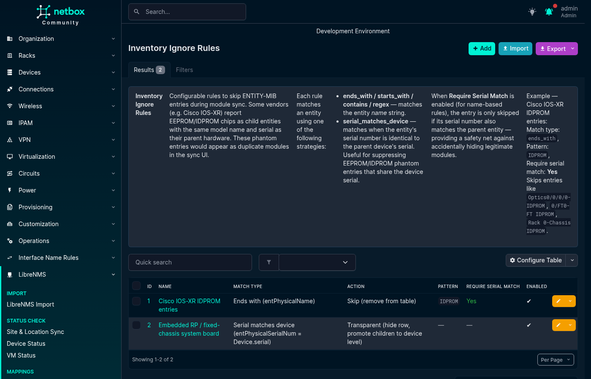
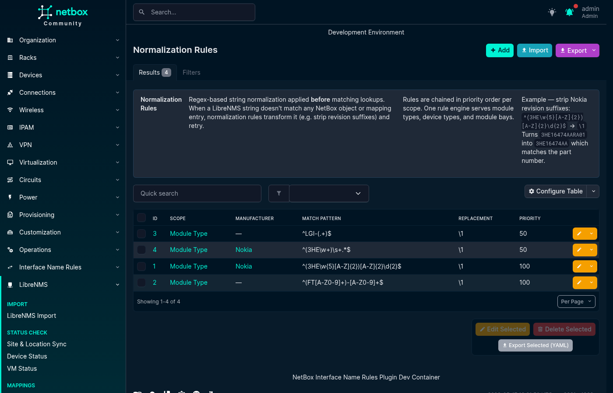
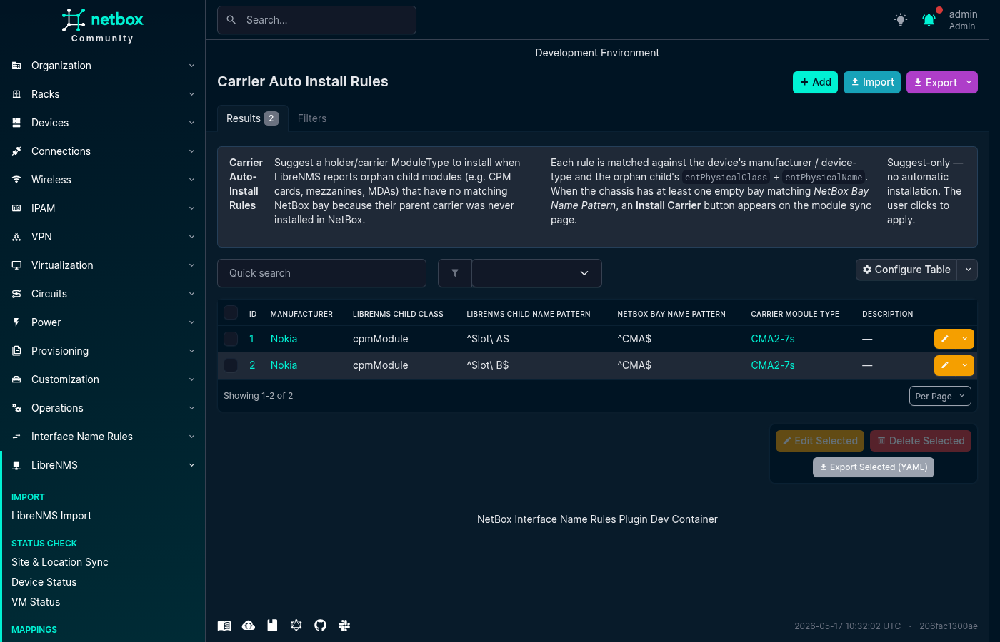

Rules & Patterns
Rules & Patterns¶
Rules and patterns transform or filter LibreNMS data when a direct mapping is not enough. Open LibreNMS → Rules & Patterns and use the tabs at the top of the page to switch between rule types.
Each tab supports creating, editing, deleting, filtering, bulk importing, and exporting rules or patterns.
Inventory Ignore Rules¶
Inventory Ignore Rules control which ENTITY-MIB inventory items appear in Module Sync and how their children are handled.
The available actions are:
- Skip removes the matched item from the sync table. Use this for phantom EEPROM or IDPROM entities that duplicate a parent component.
- Transparent hides the matched row and promotes its children to device-level bay matching. Use this for a fixed-chassis system board whose children should match device-level bays.
- Include admits an
entPhysicalClassthat the plugin's built-in class list omits. This action must be paired with the Class is match type.
Name-based rules can use Ends with, Starts with, Contains, or a Python regular expression against entPhysicalName. These comparisons are case-insensitive except for regular expressions, whose behavior is controlled by the expression. Serial matches device compares entPhysicalSerialNum with the NetBox device serial. Class is compares entPhysicalClass case-insensitively and is used only with the Include action.
For name-based rules, Require serial match parent adds a safety check: the rule applies only when the item's serial also matches an ancestor entity's serial.
- name: "Cisco IOS-XR IDPROM phantom"
match_type: ends_with
pattern: IDPROM
action: skip
require_serial_match_parent: true
enabled: true
description: "Remove duplicate IDPROM inventory entries"
- name: "Additional inventory class"
match_type: class_is
pattern: cpmModule
action: include
require_serial_match_parent: false
enabled: true
description: "Include CPM inventory rows"

Normalization Rules¶
Normalization Rules apply regular-expression substitutions before a value is matched or stored. Rules run in priority order, from the lowest number to the highest, and each rule receives the output of the previous rule.
The available scopes are:
module_typenormalizesentPhysicalModelNamebefore Module Type Mapping lookup.device_typenormalizes the LibreNMS hardware string before Device Type Mapping, part-number, or model lookup.module_baynormalizesentPhysicalNamebefore Module Bay Mapping lookup.serialnormalizes inventory serial numbers before comparison or storage.
Rules can optionally be limited to a manufacturer. Regular-expression matching is case-sensitive unless the pattern enables case-insensitive matching, for example with (?i).
The following example removes a Nokia revision suffix so that one Module Type Mapping can cover several hardware revisions:
- scope: module_type
manufacturer: Nokia
match_pattern: "^(3HE\\w{5}[A-Z]{2})[A-Z]{2}\\d{2}$"
replacement: "\\1"
priority: 10
description: "Strip Nokia revision suffix"
For this rule, 3HE16474AARA01 becomes 3HE16474AA.

Carrier Auto-Install Rules¶
Some chassis report child components without reporting the carrier module that must exist in NetBox before those components can be installed. A Carrier Auto-Install Rule suggests a suitable carrier Module Type and empty module bay when Module Sync finds a matching orphan component.
Rules are suggestion-only. The plugin does not install a carrier automatically; the operator must select Install Carrier in the Module Sync table.
A rule can use:
- An optional manufacturer.
- An optional Python regular expression matched against the Device Type model name.
- An exact LibreNMS child class, such as
cpmModule. - A Python regular expression matched against the child's
entPhysicalName. - A Python regular expression matched against empty chassis-level module bay names.
- The carrier Module Type to suggest.
The three regular-expression fields use full-match behavior, so their expressions must match the complete value.
- manufacturer: Nokia
device_type_pattern: ".*SR-s.*"
librenms_child_class: cpmModule
librenms_child_name_pattern: "^Slot [AB]$"
netbox_bay_name_pattern: "^CMA$"
carrier_module_type: "Nokia CMA Carrier"
description: "Suggest a CMA carrier for Nokia 7750 SR-s devices"

Port Stack LAG Patterns¶
Port Stack LAG Patterns help the plugin interpret LibreNMS port-stack relationships for a particular LibreNMS operating system identifier.
Normally, a LAG aggregate is identified by the LibreNMS ifType value ieee8023adLag. Some platforms report another type, so LAG Name Pattern provides a Python regular expression that recognizes aggregate interface names instead. For example, Cisco IOS can report port channels as propVirtual, while names such as Po1 match ^Po\d+$.
Some LibreNMS port-stack rows describe a service access point rather than a relationship between NetBox interfaces. The optional SAP Name Pattern identifies those names so the rows are skipped. For example, Nokia SR OS can report service access points such as lag-1:10.
Patterns are scoped by librenms_os, which is matched case-insensitively. The LAG and SAP expressions use Python regular expressions. LAG names use full-match behavior; SAP patterns match when found within the name.
- librenms_os: ios
lag_name_pattern: "^Po\\d+$"
sap_name_pattern: ""
description: "Recognize Cisco IOS port channels"
- librenms_os: timos
lag_name_pattern: "^lag-\\d+$"
sap_name_pattern: ":"
description: "Recognize Nokia LAGs and skip SAP rows"
Importing and Exporting Rules¶
All Rules & Patterns tabs support NetBox's standard CSV, JSON, and YAML bulk import. Select Import on the relevant list and provide records using that rule type's field names.
To back up or move rules between NetBox installations, select records in a list and use the YAML export action. Example files for Normalization, Inventory Ignore, and Carrier Auto-Install rules are available in the repository's contrib/ directory.
For the complete module synchronization workflow, see the Module Sync guide.